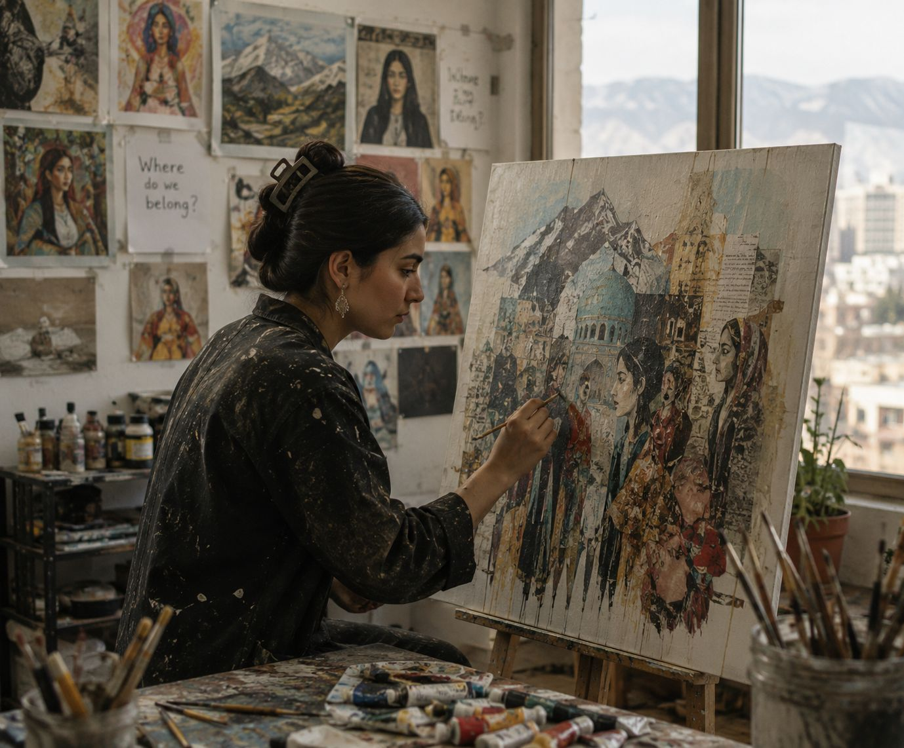
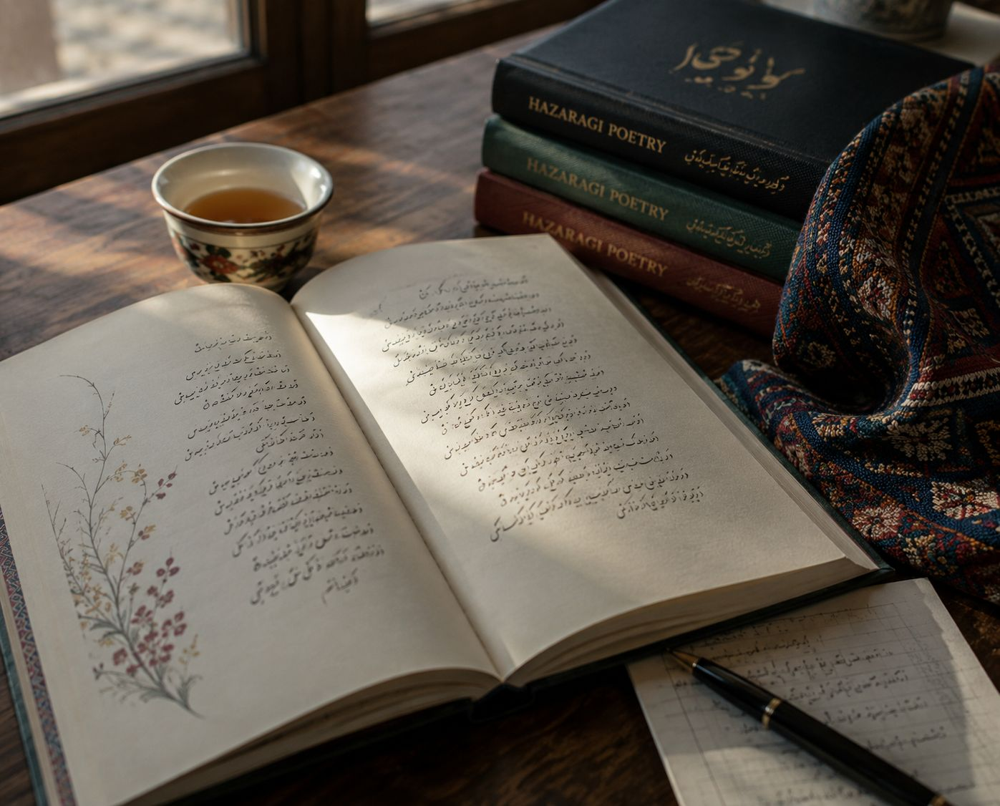
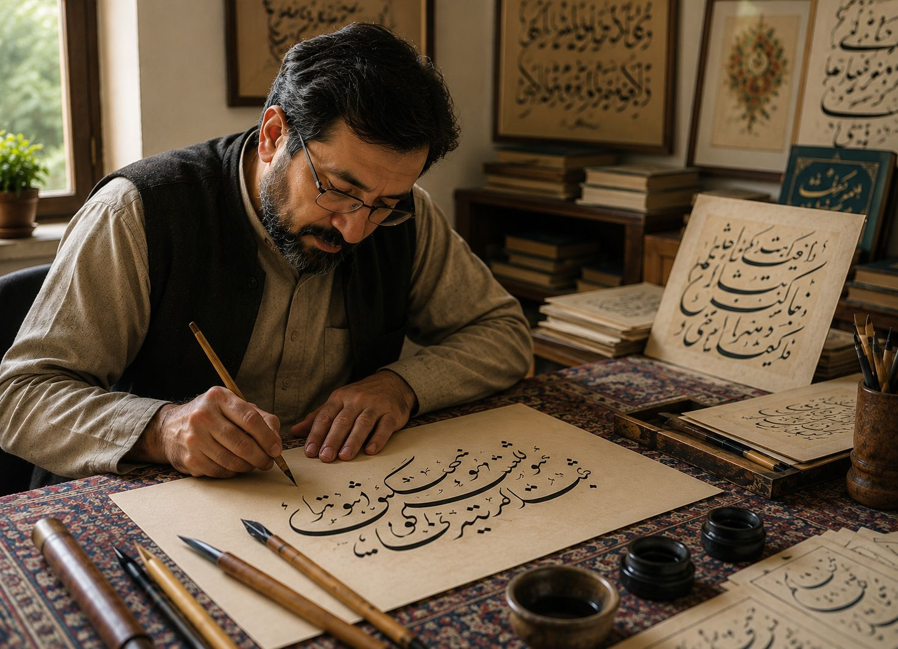
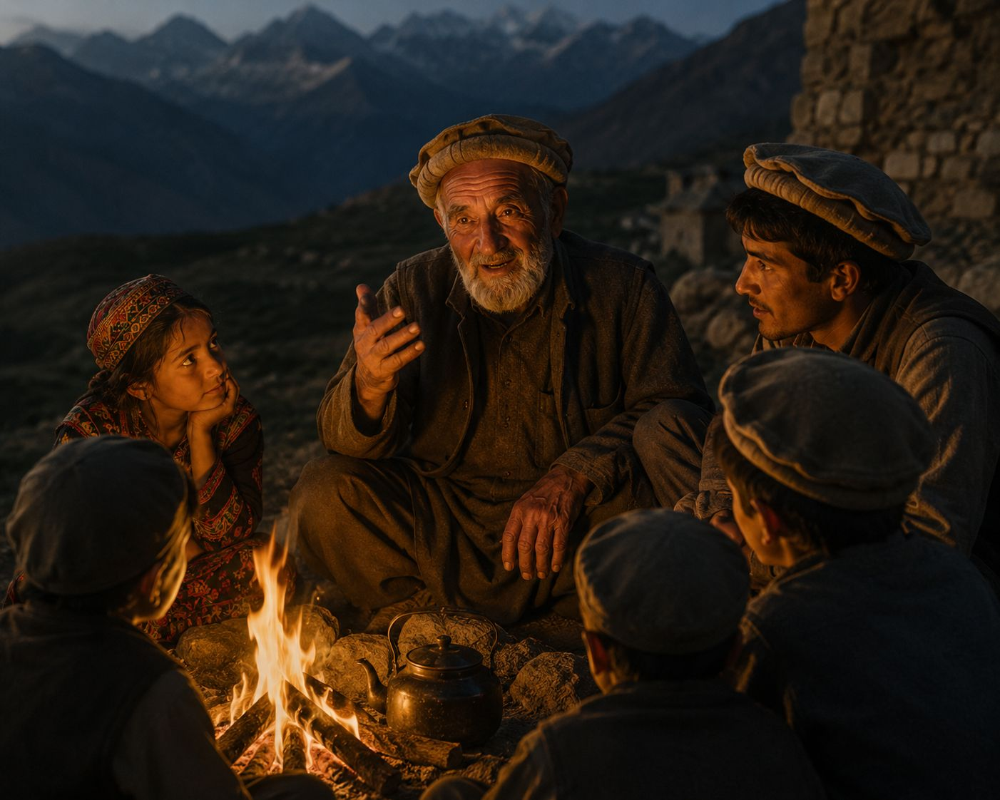
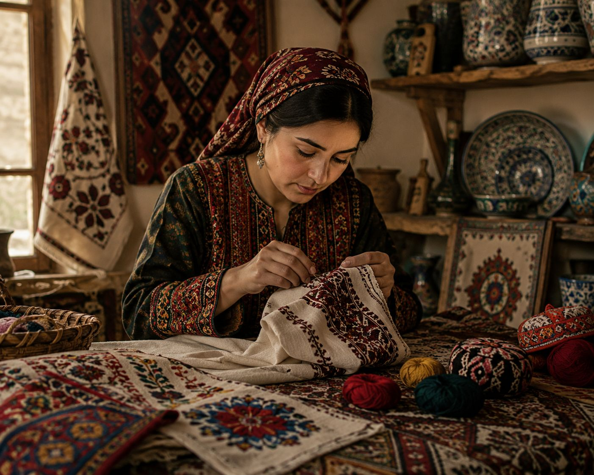
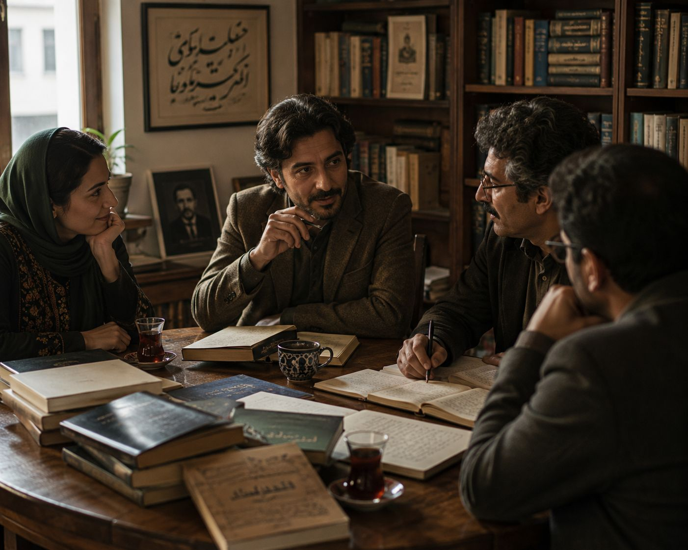

Poetry, storytelling, calligraphy, contemporary artists and the symbolism that runs through Hazara creative life.

From Kabul to Melbourne, young artists confront memory, displacement and identity.

Verse becomes a vessel for memory, longing and a language carried across borders.

The discipline and devotion behind Persian script as a visual art.

The proverbs, riddles and tales passed from one generation to the next.

Motifs, colors and patterns and the meanings woven into them.

The novelists, poets and essayists shaping a modern literary identity.